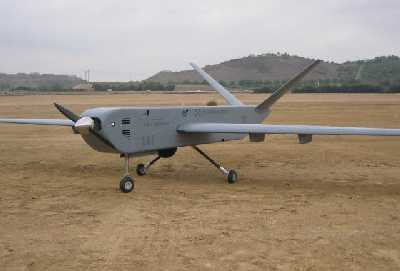
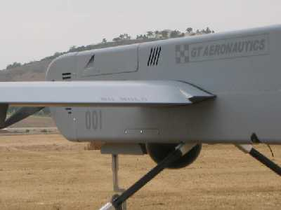

Remotely Piloted Aircraft System
| Endurance | 6 hours |
| Cruise Speed | 100 knots |
| Max Speed | 140 kts |
| Max Ceiling | 10,000 feet |
| Normal Cruise Altitude | 1000 - 5,000 feet |
| Range | 500 nautical miles |
| Takeoff/Landing Speed | 35 knots (STOL-Capable) |
| Max Payload Capacity | 65 lbs total |
| Type | Single Engine, Tractor, V-Tail |
| Engine | 240cc 2 Cylinder (gasoline) |
| Construction | Modular, Compression Molded Composite |
| Landing Gear | Retractable w/suspension & brakes |
| Wingspan | 16'10" |
| Length | 10'3" |
| Height | 3'6" |
| Weight | 100 lbs (dry/no payload) / 245 lbs (wet/max payload) |


The GT-1500 RPAS is a modular unmanned aircraft system designed to fulfill multi-role applications in the short field takeoff and landing environment. The aircraft incorporates multiple high-lift devices and "all-composite" construction to enable flight operations in confined rural and urban areas.
With the high-lift devices stowed, the specially-designed laminar-flow airfoil allows the GT-1500 to cruise in excess of 100 knots, reducing the "base to on-scene" flight time and extending its range. The fixed landing gear provides robust capability in rough-field operations. The retractable landing gear (optional) reduces drag and includes a rugged shock suspension system, steerable nosewheel and brakes on the main wheels.
The powerplant is an air-cooled, twin cylinder engine that incorporates an electric starter for inflight start and a generator system capable of 650 watts of inflight power. An internal 5 gallon fuel supply and wing station fuel can provide endurance exceeding 10 hours and 500 nautical miles. On-site assembly, launch, and operation are accomplished with only 2 personnel in 30 minutes or less. The aircraft can launch and recover from semi-prepared surfaces.
NOTE: The performance specifications listed above are calculated. The GT-1500 RPAS is currently completing flight testing. Performance specifications will be validated when all flight testing is complete.